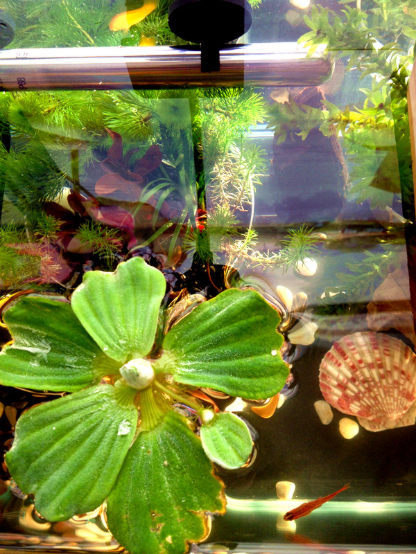
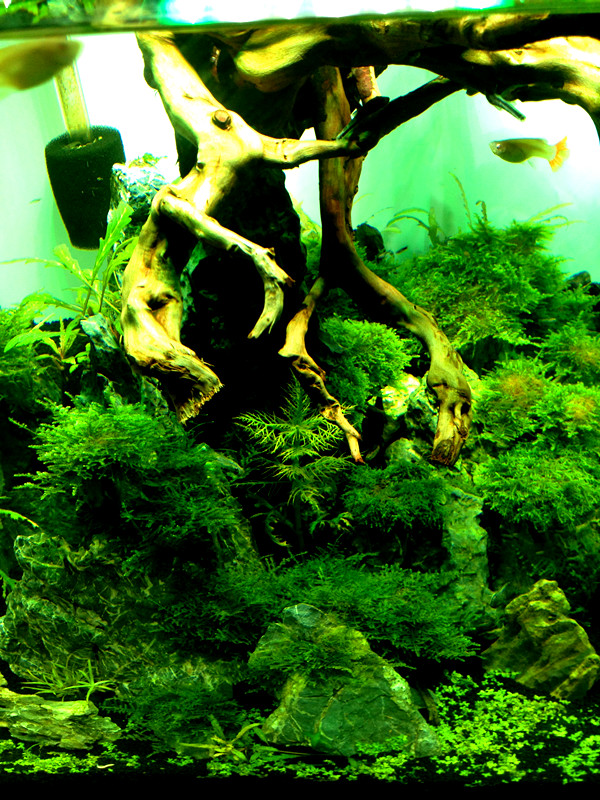
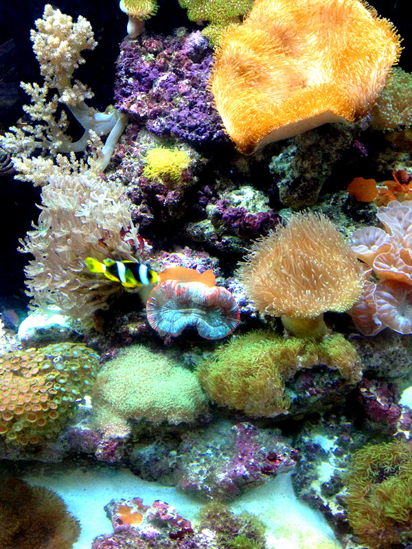
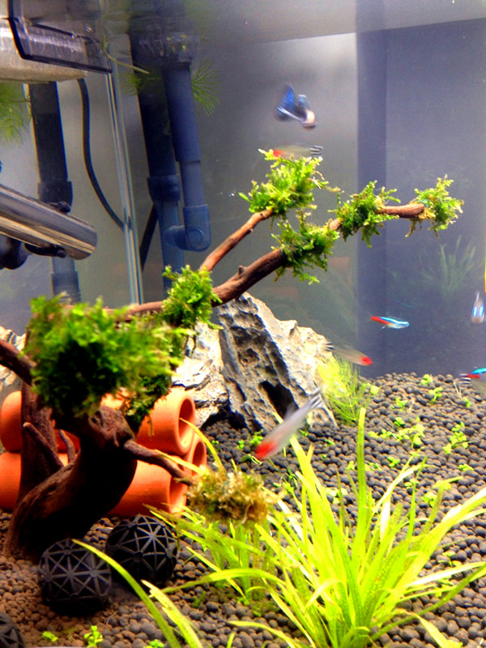

{% include base_path %}

<section class="page__content" itemprop="text">
<p class="alignlefttab">Zhiwei always loves little animals.
   They are naughty and trustful.
   Accompanied by quite a lot of pets since young, he always felt happy and love.
   Tropical fishes were his latest pets, after he lost his dog since she passed away after staying at his home for over 12 years.
   Quite exciting to see new baby tropical fishes every a few months.</p>
<div style="clear: both;"></div>

<p><center>
   </center>
</p>

<p><center>
    </center>
</p>

<p><center>
   </center>
</p>

</section>
